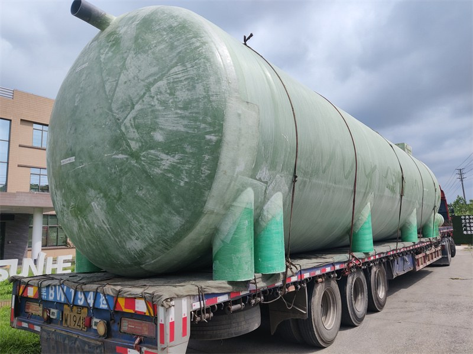
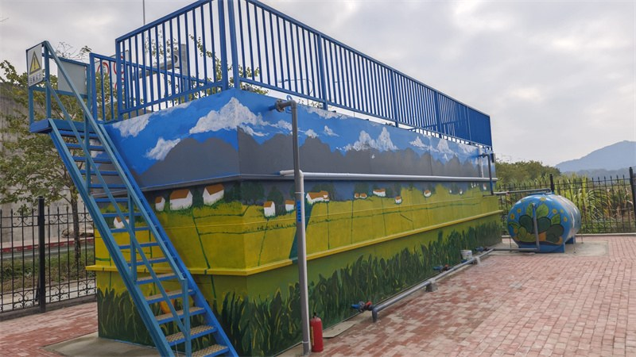
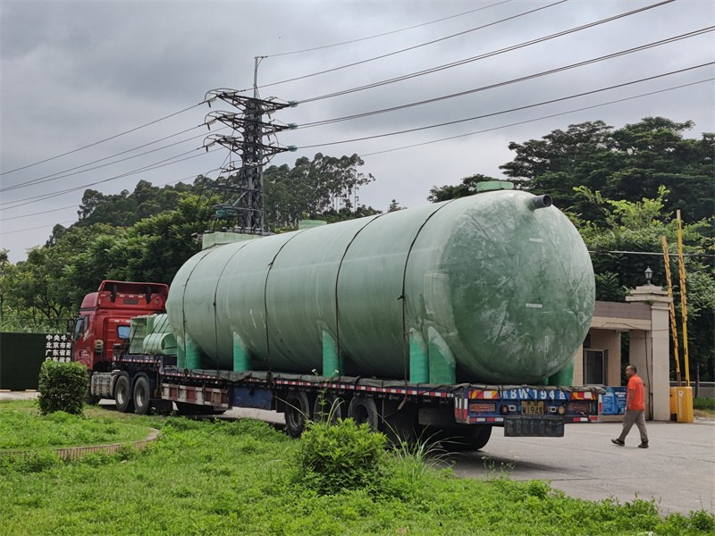
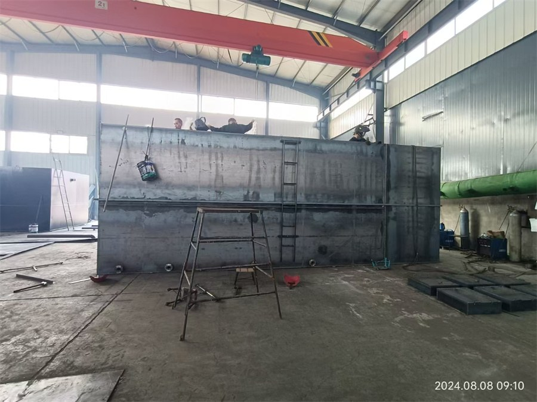
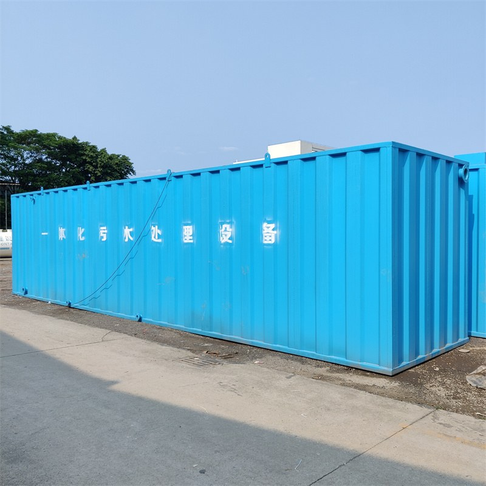
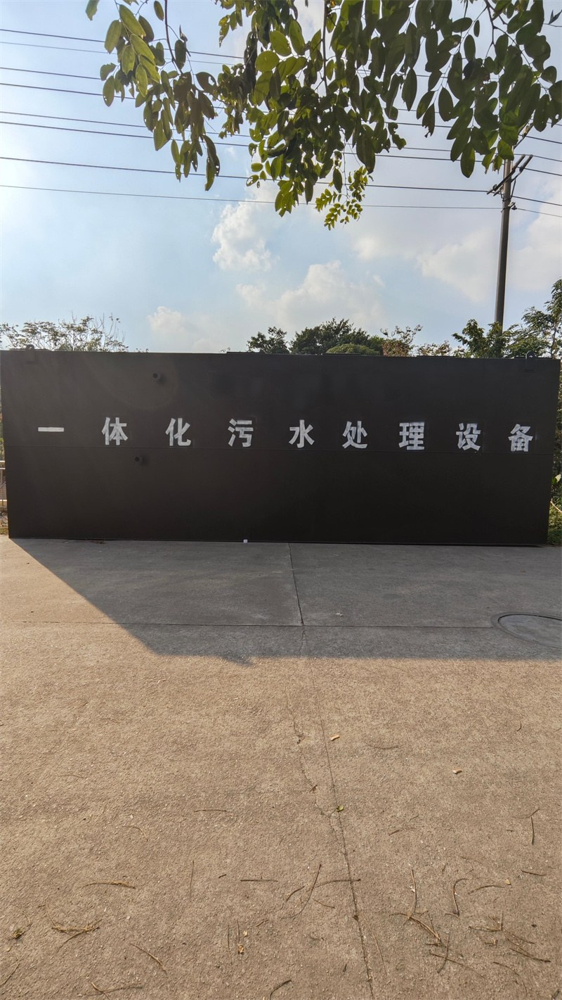
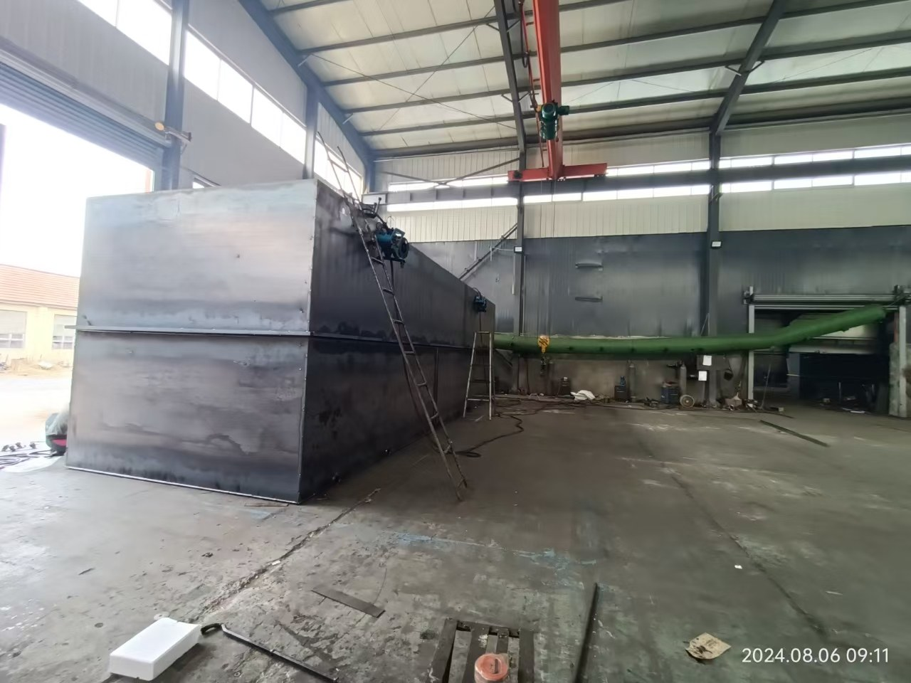

01 / 来多少水
提供日均水量、集中排水时段和已知峰值；暂不清楚时，可先整理用水及生产记录。
处理量是沟通起点，水质、运行时段和排放目标也需要一并核对。
提供日均水量、集中排水时段和已知峰值；暂不清楚时，可先整理用水及生产记录。
说明污水来源，提供已有检测报告及采样时间，区分正常生产与清洗排水。
说明纳管、排放或回用途径，并提供已明确的指标与项目要求。
准备可用尺寸、管道标高、供电、检修通道及新建或改造条件。
按清单填写已有信息，可作为首次技术沟通的附件。
TXT 文本清单，无需留联系方式即可下载。仅用于资料准备，不是设备参数表或报价单。
| 核对项目 | 请提供或说明 | 配置沟通时确认 |
|---|---|---|
| 水量与运行时段 | 日均水量、峰值、每天运行时段 | 处理能力、调节需求与设备组合 |
| 水质与处理目标 | 检测报告、排放去向与目标指标 | 预处理、生化及后续处理的适用组合 |
| 尺寸与布置 | 场地尺寸、接口标高、运输与吊装条件 | 外形尺寸、材质、接口和检修空间 |
| 用电与运维 | 供电条件、值守方式、已有监控系统 | 装机功率、运行策略、报警和维护要求 |
| 供货与现场工作 | 设备采购、配套施工或改造需求 | 供货清单、安装调试分工与交付资料 |
〔待确认：可公开的系列型号、规格范围、性能适用条件、设备尺寸和功率数据〕
资料确认后提供对应参数。当前图片不作为型号或处理能力的依据。
按可见外观展示设备与应用画面。图片用于了解形态，不据此判断型号、材质、处理能力或项目归属。
补充图片尚未逐一对应型号与项目，具体配置以确认后的资料为准。













现有资料不足以支持处理效果或运行费用承诺。